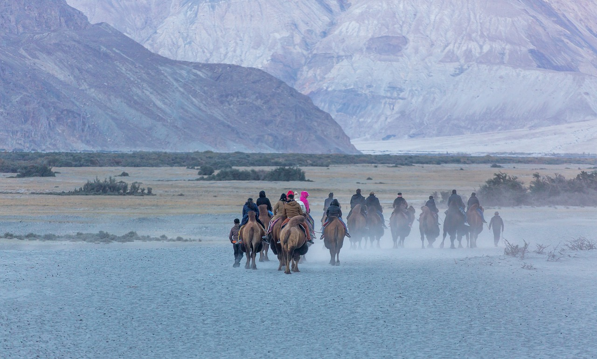
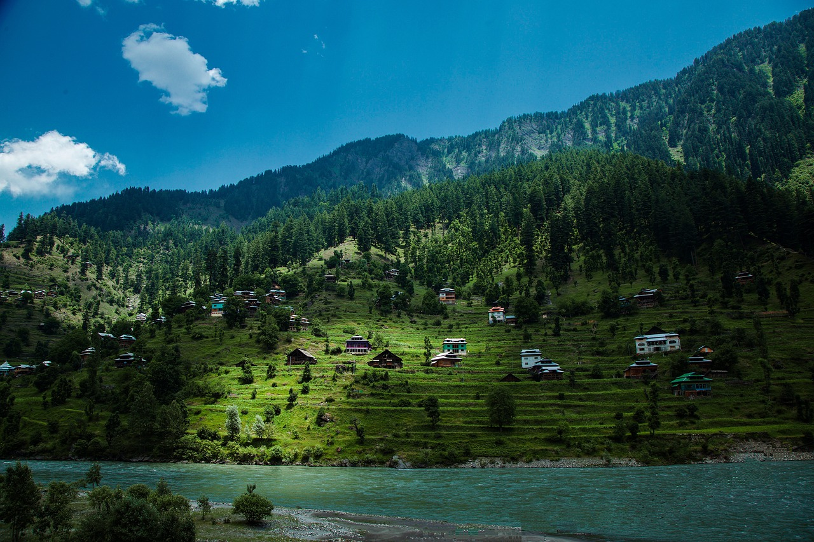
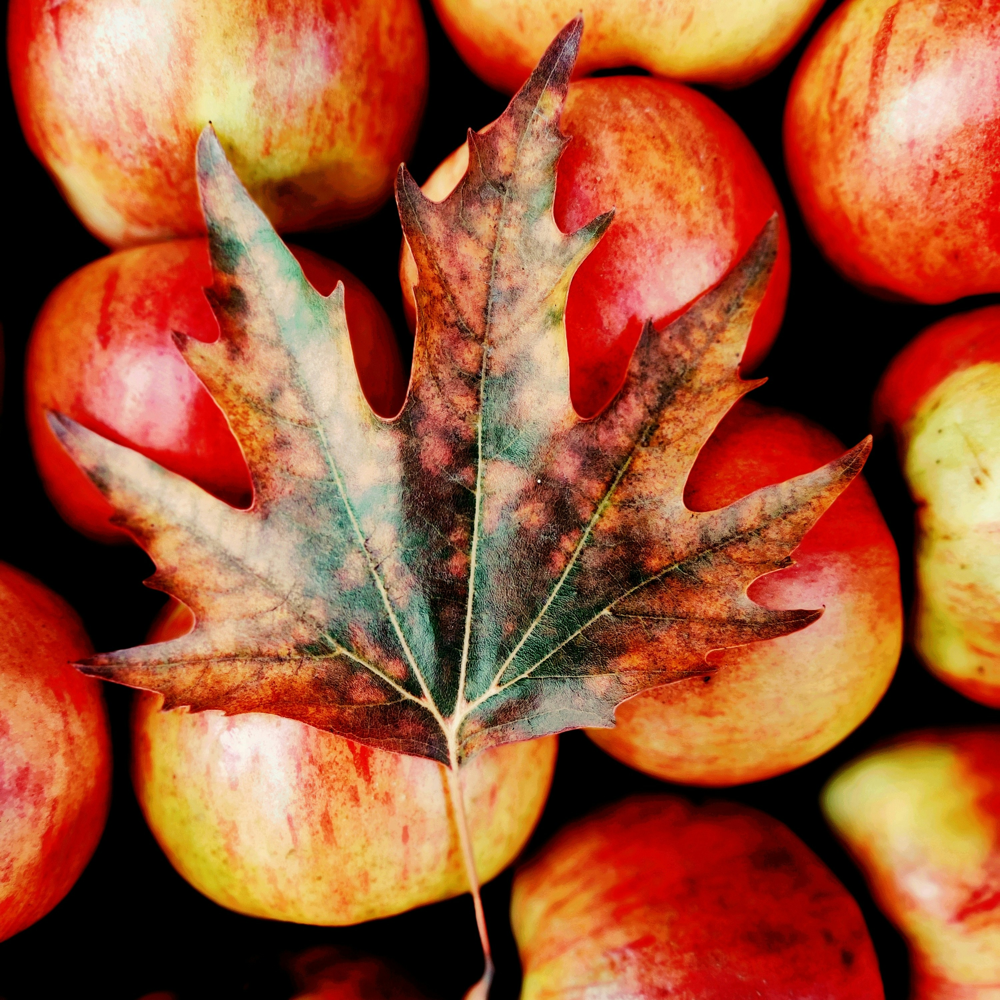
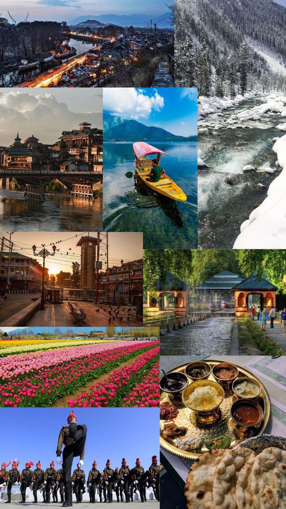

explore the breathtaking landscapes, rich cultures & timeless beauty of the valley of kashmir
-->
kashmir
Jammu & Kashmir is a newly created Union Territory in India consisting of two divisions:Jammu
Division &
Kashmir Division, both of which are administered by the Central Government of India. It is located
to
the north of Himachal Pradesh & Punjab and to the west of Ladakh. Jammu is known as the City of
Temples
& offers plentiful sightseeing opportunities with its gardens, palaces, forts & religious
attractions,
the most famous of which is Mata Vaishno Devi in Katra. Kashmir Valley is famous for its meadows,
lakes,
high altitude passes, hill stations, Mughal Gardens, Dal Lake, Shikara Ride & ancient religious
sites.
There are three valleys in Kashmir region, namely Kashmir, Gurez and Lolab. The Kashmir valley is in
the
shape of a bowl and it has ten districts. It has people who are called Kashmiri and Gujar. The Gurez
valley has population called Sheena and Lolab valley has Kashmiri and Pahadi population. It is
interesting to note that Gurez valley in Bandipura district, is spread over about 2000 sq. km. and
it
has no cultural connect with Kashmir valley because it was part of the Gilgit region, illegally
occupied
by Pakistan since 1947.
updates corner

kashmir
Kashmir is a region situated between India and Pakistan in South Asia. It is believed that the
name
Kashmir originated from the word ‘Ka’ which means water, and ‘shimera’ to desiccate.
The story of Kashmir is complex and has historical, cultural, and political dimensions. Over the
years, many rulers and empires, like the Mauryas, Kushans, and Mughals have influenced the
paradise
of the Earth.
history
The history of Jammu and Kashmir is intricately linked to the broader narrative of India’s
struggle
for independence and the partition of British India in 1947. The controversial accession of the
princely state to India led to the first Indo-Pak war and subsequent conflicts over the disputed
territory. The signing of the Simla Agreement in 1972 aimed to establish peaceful relations
between
India and Pakistan.
traditions&culture
Kashmir, often called the “Paradise on Earth,” is renowned for its natural beauty. However, its
cultural heritage is equally impressive. The region’s rich history and traditions come alive
through
art, music, religion, and festivals. This blog delves into the cultural heritage of Kashmir,
exploring its unique history, vibrant customs, and timeless traditions.
Kashmir’s culture has roots that stretch back thousands of years.

destinations
Its scenic beauty and salubrious climate have given it the aptitude of “Tourists Paradise.” With
its
lakes and mountains, its luxurious chinars and tall slender poplars, delicious fruits ancient
monuments, its placid rivers and murmuring streams swarming with Himalayan trout, and a host of
innumerable natural attractions Kashmir, as G.T. Vigne prophesied in 1885, has become the sine
qua
non of the traveller to the East.

cuisuine
Kashmir is heaven, not only in terms of landscapes but for foodies too. Everyone should not only
visit Kashmir but also try Kashmir Food once in their lifetime. Kashmir cuisine is varied and
flavorsome. Not only will you find the influence of Mughals and Arabs in the dishes but many of
the
dishes have a signature of Kashmiri pundits on them. If you are a meat lover, you have more
advantage than vegetarians because Kashmiris know 30 different ways to make mutton.

gallery
This gallery of Kashmir encompasses the spoken language, written literature, cuisine,
architecture,
traditions, and history of the Kashmiri people native to the northern part of the Indian
subcontinent. The culture of Kashmir was influenced by the Persian as well as Central Asian
cultures
after the Islamic rule of Kashmir. Kashmiri culture is influenced by Hinduism, Buddhism and
later by
Islam.